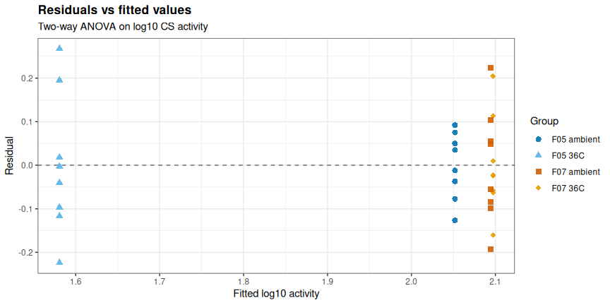
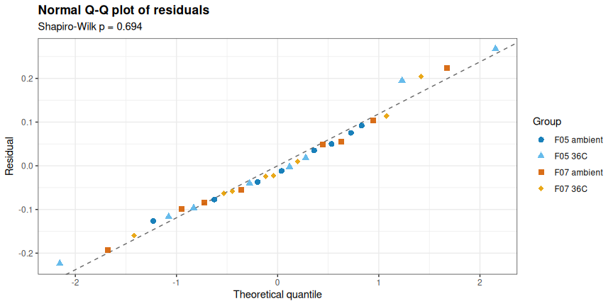
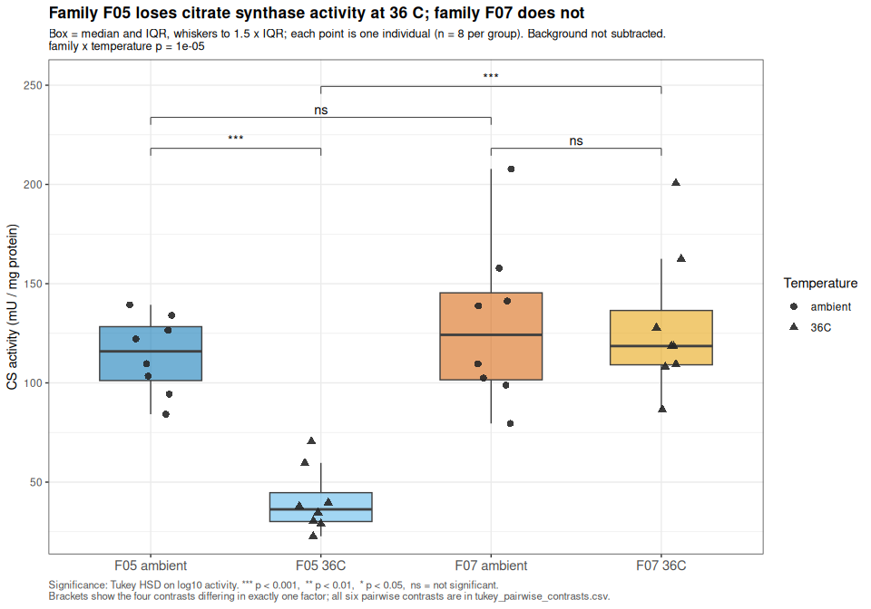
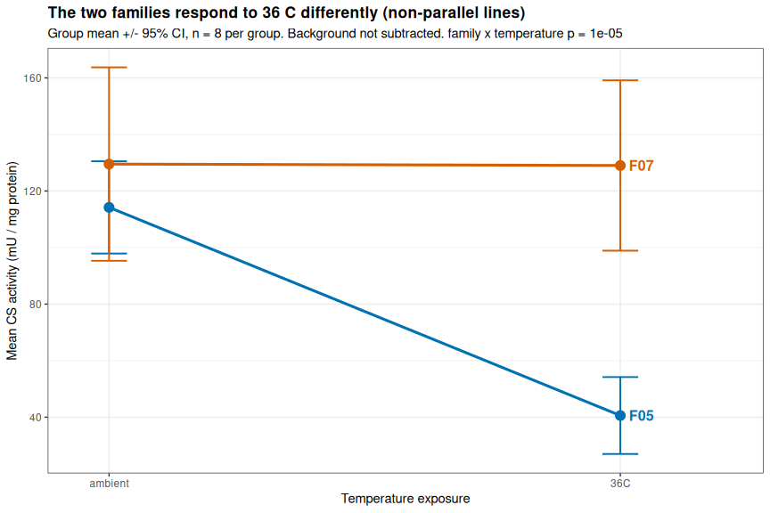
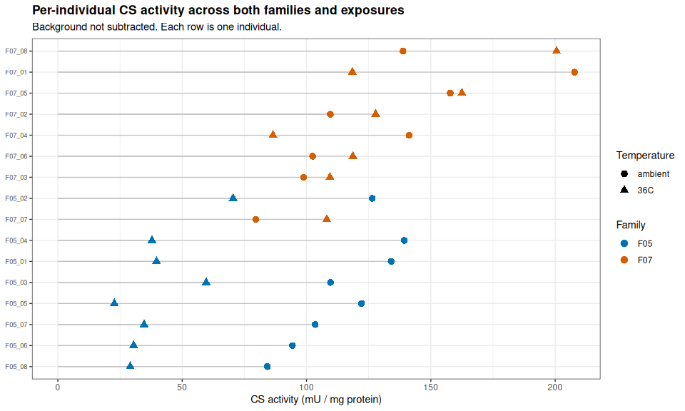
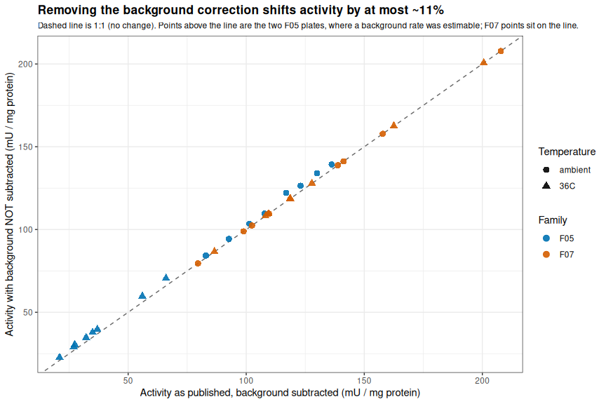

INTRO
Cross-plate comparison of citrate synthase (CS) activity across two families (F05, F07) at two temperature exposures (ambient and 36°C), drawing on the finished per-plate results from three prior notebook entries: F05 ambient re-assay, 20260824, F05 36°C, 20260814, and F07 ambient + 36°C, 20260824 (Notebook entries). The 2026-08-11 F05 ambient plate (Notebook entry) is deliberately excluded — it required repeating for poor data quality — and its 20260824 re-assay is used in its place. All four family × temperature groups carry n = 8 individuals, a fully balanced 2 × 2 design across 32 individuals.
The question this analysis asks is whether CS activity responds to 36°C exposure, and whether that response differs between families (a family × temperature interaction).
Background luminescence is not subtracted from any activity value in this document. One retained plate (F07 ambient + 36°C) has no usable background estimate, so to treat every plate identically, the background correction is removed from all three source analyses before comparison. See the BACKGROUND REMOVAL section below for how small this correction was where it could be measured.
All data/code/analysis is available here:
MATERIALS & METHODS
This is a downstream statistical analysis, not a new plate assay — it takes the finished citrate_synthase_activity_results.csv output of the three per-plate analyses linked above as its input. All individuals were originally assayed with the Citrate Synthase Assay Kit (ABCAM; cat: ab239712); see the linked per-plate entries for assay methods, and the homogenization and protein quantification entries for upstream methods.
Individuals are treated as unpaired across temperature — an animal is assayed at one exposure only. Statistics are computed on log10(activity): a two-way ANOVA (family × temperature) on a balanced design (n = 8/cell), followed by Tukey HSD pairwise contrasts. The F05 ambient-vs-36°C comparison spans two plates run ten days apart (20260814, 20260824); the F07 comparison is made within a single plate (20260824) — cross-plate comparability is checked against standard-curve and positive-control calibration values in the PLATE PROVENANCE section below.
Analysis
Data were analyzed in R. The Rmd file is here (GitHub):
Knitted markdown is below.
Data files
Output tables and figures from this analysis are here:
- https://github.com/RobertsLab/sormi-assay-development/tree/main/Citrate_synthase/outputs/Gen5-20260825-mgig-sormi-citrate_synthase-F05-F07-temperature-comparison
RESULTS
The temperature response differs between the two families. A two-way ANOVA on log10(activity) finds a significant family × temperature interaction (p = 1e-05), accounting for 23.0% of total variance:
F05loses CS activity at 36°C — mean activity falls from 114.2 to 40.6 mU/mg protein, a 0.36-fold change (-64%), significant after Tukey adjustment (p = 2e-07).F07shows essentially no temperature response — mean activity moves from 129.5 to 129.0 mU/mg protein (1.00-fold, p = 1); its 95% CI at 36°C overlaps its ambient CI substantially.The two families are indistinguishable at ambient temperature (1.10-fold, p = 0.9) — they differ only after heat exposure, which is what makes this an interaction rather than a baseline family difference.
Removing the background correction does not drive any of this. Across all 32 individuals the correction was worth 0.0-11.3% of activity (median 0.8%), and both families’ ambient groups shift in the same direction.
1 BACKGROUND
Cross-plate comparison of citrate synthase (CS) activity in ctenidia of Magallana gigas (Pacific oyster) from two families (F05, F07) at two temperature exposures (ambient and 36 °C), assayed with the Abcam Citrate Synthase Assay Kit (ab239712), v4a.
The question here is not how to compute activity – that was done, plate by plate, in the per-plate analyses listed below. This document takes those finished per-plate results as its input and asks:
- Does CS activity respond to 36 °C exposure?
- Does that temperature response differ between families? – i.e. is there a family × temperature interaction?
All four family × temperature groups carry n = 8 individuals, giving a fully balanced 2 × 2 design (32 individuals total).
1.1 Inputs: which plates are used
This analysis reads the citrate_synthase_activity_results.csv output of three per-plate analyses:
| Family | Temperature | Source analysis | Plate date |
|---|---|---|---|
F05 |
ambient | Gen5-20260824-mgig-sormi-citrate_synthase-F05-ambient |
2026-08-24 |
F05 |
36 °C | Gen5-20260814-mgig-citrate_synthase-F05-36C |
2026-08-14 |
F07 |
ambient + 36 °C | Gen5-20260824-mgig-sormi-citrate_synthase-F07-ambient_and_36C |
2026-08-24 |
The 2026-08-11 F05 ambient plate is deliberately excluded (note 1).
1.2 Notes
- The 2026-08-11
F05-ambient plate is excluded from this analysis. That plate required repeating because of poor data quality across both its samples and its standard curve (standard-curve R2 of 0.9678 after excluding 8 of 18 standard wells as outliers, 4 of 8 samples over the 15% technical-CV threshold, and one sample with all three replicates baseline-compromised). Those sameF05ambient homogenates were re-assayed on 2026-08-24, and the 2026-08-24 re-assay is theF05ambient data used here. - Background luminescence is NOT subtracted from any activity value in this document. One retained plate (
Gen5-20260824-mgig-sormi-citrate_synthase-F07-ambient_and_36C) has no usable background estimate – Reaction Mix was added to all three of its pooled-background wells instead of Background Control Mix, so its background rate is unestimable and its per-plate analysis already fell back to a correction of 0. Rather than compare background-corrected values on two plates against uncorrected values on a third, the background correction is removed from all plates so every value is treated identically. This is a small change: where background was measurable it never exceeded ~10% of the raw rate (quantified in BACKGROUND REMOVAL). - Activity is normalized to total extracted protein (mU per mg protein), carried through from the per-plate analyses, which measured protein directly by BCA/Bradford-style assay on 2026-08-13. Tissue weight is not used.
- The
F05temperature contrast spans two plates and two days (36 °C on 2026-08-14, ambient on 2026-08-24), whereas theF07temperature contrast sits within a single plate (2026-08-24). Plate and instrument state are compared across plates in PLATE PROVENANCE. - Individuals are treated as unpaired across temperature. An animal is assayed at one exposure only;
F05_01_ambientandF05_01_36Care different individuals from the same family, so no paired/repeated-measures structure is used. - Statistics are computed on log10(activity). Activity is a ratio-scale rate spanning roughly an order of magnitude across groups; the log scale makes the family × temperature interaction a test of multiplicative (fold-change) response, which is the biologically meaningful comparison for an enzyme rate, and it stabilizes the group-to-group spread in variance. Because the design is balanced, sequential (Type I) sums of squares from
aov()are identical to Type II and Type III, so no special contrast handling is needed.
library(knitr)
library(dplyr)##
## Attaching package: 'dplyr'
## The following objects are masked from 'package:stats':
##
## filter, lag
## The following objects are masked from 'package:base':
##
## intersect, setdiff, setequal, unionlibrary(tidyr)
library(ggplot2)
library(tibble)
knitr::opts_chunk$set(
echo = TRUE, # Display code chunks
eval = TRUE, # Evaluate code chunks
warning = FALSE, # Hide warnings
message = FALSE, # Hide messages
comment = "", # Prevents appending '##' to beginning of lines in code output
results = 'hold' # Holds output so it's all printed together after code chunk
)1.3 Analysis parameters
analysis_params <- list(
subtract_background = FALSE, # note 2: background is NOT subtracted anywhere
alpha = 0.05, # significance level for ANOVA / Tukey
cv_threshold_pct = 15 # technical-CV threshold used by the per-plate analyses
)
cat("--- analysis_params: settings governing this comparison ---\n")
str(analysis_params)--- analysis_params: settings governing this comparison ---
List of 3
$ subtract_background: logi FALSE
$ alpha : num 0.05
$ cv_threshold_pct : num 151.4 Input paths
outputs_root <- "../outputs"
# Each retained per-plate analysis and the family/temperature it contributes.
plate_inputs <- tribble(
~plate_dir, ~contributes,
"Gen5-20260824-mgig-sormi-citrate_synthase-F05-ambient", "F05 ambient",
"Gen5-20260814-mgig-citrate_synthase-F05-36C", "F05 36C",
"Gen5-20260824-mgig-sormi-citrate_synthase-F07-ambient_and_36C", "F07 ambient + 36C"
) %>%
mutate(results_csv = file.path(outputs_root, plate_dir,
"citrate_synthase_activity_results.csv"))
output_dir <- file.path(
outputs_root,
"Gen5-20260825-mgig-sormi-citrate_synthase-F05-F07-temperature-comparison")
dir.create(output_dir, showWarnings = FALSE, recursive = TRUE)
cat("--- plate_inputs: per-plate results files feeding this analysis ---\n")
print(as.data.frame(plate_inputs[, c("plate_dir", "contributes")]))
cat("\n--- all input files exist? ---\n")
print(setNames(file.exists(plate_inputs$results_csv), plate_inputs$plate_dir))
cat("\n--- output_dir ---\n")
str(output_dir)--- plate_inputs: per-plate results files feeding this analysis ---
plate_dir
1 Gen5-20260824-mgig-sormi-citrate_synthase-F05-ambient
2 Gen5-20260814-mgig-citrate_synthase-F05-36C
3 Gen5-20260824-mgig-sormi-citrate_synthase-F07-ambient_and_36C
contributes
1 F05 ambient
2 F05 36C
3 F07 ambient + 36C
--- all input files exist? ---
Gen5-20260824-mgig-sormi-citrate_synthase-F05-ambient
TRUE
Gen5-20260814-mgig-citrate_synthase-F05-36C
TRUE
Gen5-20260824-mgig-sormi-citrate_synthase-F07-ambient_and_36C
TRUE
--- output_dir ---
chr "../outputs/Gen5-20260825-mgig-sormi-citrate_synthase-F05-F07-temperature-comparison"1.5 Plate provenance
Per-plate calibration and instrument-state values, transcribed from the three source analyses. These are the anchors that make cross-plate comparison defensible: if the GSH standard curve and the CS positive control agree across plates, then a rate measured on one plate means the same thing as a rate measured on another.
plate_provenance <- tribble(
~plate_dir, ~plate_date, ~std_slope_A412_per_nmol, ~std_r2, ~pos_control_mA412_min, ~pos_control_cv_pct, ~background_usable,
"Gen5-20260824-mgig-sormi-citrate_synthase-F05-ambient", "2026-08-24", 0.03234, 0.9983, 2.700, 22.8, TRUE,
"Gen5-20260814-mgig-citrate_synthase-F05-36C", "2026-08-14", 0.03075, 0.9985, 2.933, 3.9, TRUE,
"Gen5-20260824-mgig-sormi-citrate_synthase-F07-ambient_and_36C", "2026-08-24", 0.03140, 0.9992, 2.933, 2.6, FALSE
)
cat("--- plate_provenance: calibration + instrument state per plate ---\n")
str(as.data.frame(plate_provenance))--- plate_provenance: calibration + instrument state per plate ---
'data.frame': 3 obs. of 7 variables:
$ plate_dir : chr "Gen5-20260824-mgig-sormi-citrate_synthase-F05-ambient" "Gen5-20260814-mgig-citrate_synthase-F05-36C" "Gen5-20260824-mgig-sormi-citrate_synthase-F07-ambient_and_36C"
$ plate_date : chr "2026-08-24" "2026-08-14" "2026-08-24"
$ std_slope_A412_per_nmol: num 0.0323 0.0307 0.0314
$ std_r2 : num 0.998 0.999 0.999
$ pos_control_mA412_min : num 2.7 2.93 2.93
$ pos_control_cv_pct : num 22.8 3.9 2.6
$ background_usable : logi TRUE TRUE FALSEplate_provenance %>%
transmute(
Plate = plate_dir,
Date = plate_date,
`Std slope (A412/nmol)` = std_slope_A412_per_nmol,
`Std curve R^2` = std_r2,
`Pos ctrl (mA412/min)` = pos_control_mA412_min,
`Pos ctrl CV (%)` = pos_control_cv_pct,
`Background estimable` = ifelse(background_usable, "yes", "no (note 2)")
) %>%
kable(caption = "Calibration and instrument state for each retained plate.")| Plate | Date | Std slope (A412/nmol) | Std curve R^2 | Pos ctrl (mA412/min) | Pos ctrl CV (%) | Background estimable |
|---|---|---|---|---|---|---|
| Gen5-20260824-mgig-sormi-citrate_synthase-F05-ambient | 2026-08-24 | 0.03234 | 0.9983 | 2.700 | 22.8 | yes |
| Gen5-20260814-mgig-citrate_synthase-F05-36C | 2026-08-14 | 0.03075 | 0.9985 | 2.933 | 3.9 | yes |
| Gen5-20260824-mgig-sormi-citrate_synthase-F07-ambient_and_36C | 2026-08-24 | 0.03140 | 0.9992 | 2.933 | 2.6 | no (note 2) |
Calibration and instrument state for each retained plate.
prov_spread <- plate_provenance %>%
summarise(
slope_min = min(std_slope_A412_per_nmol),
slope_max = max(std_slope_A412_per_nmol),
slope_cv = 100 * sd(std_slope_A412_per_nmol) / mean(std_slope_A412_per_nmol),
pos_min = min(pos_control_mA412_min),
pos_max = max(pos_control_mA412_min),
pos_cv = 100 * sd(pos_control_mA412_min) / mean(pos_control_mA412_min),
min_std_r2 = min(std_r2)
)
cat(sprintf(
"Standard-curve slope across plates: %.5f-%.5f A412/nmol (CV %.1f%%)\n",
prov_spread$slope_min, prov_spread$slope_max, prov_spread$slope_cv))
cat(sprintf(
"Positive control across plates: %.3f-%.3f mA412/min (CV %.1f%%)\n",
prov_spread$pos_min, prov_spread$pos_max, prov_spread$pos_cv))
cat(sprintf("Worst standard-curve R^2: %.4f\n", prov_spread$min_std_r2))Standard-curve slope across plates: 0.03075-0.03234 A412/nmol (CV 2.5%)
Positive control across plates: 2.700-2.933 mA412/min (CV 4.7%)
Worst standard-curve R^2: 0.99832 LOAD PER-PLATE RESULTS
2.1 Read the results CSVs
read_plate_results <- function(results_csv, plate_dir) {
read.csv(results_csv, check.names = FALSE, stringsAsFactors = FALSE) %>%
mutate(plate_dir = plate_dir)
}
plate_results_raw <- Map(read_plate_results,
plate_inputs$results_csv,
plate_inputs$plate_dir) %>%
bind_rows()
cat("--- plate_results_raw: all per-plate result rows, stacked ---\n")
str(as.data.frame(plate_results_raw))--- plate_results_raw: all per-plate result rows, stacked ---
'data.frame': 32 obs. of 18 variables:
$ Sample : chr "F05_01_ambient" "F05_02_ambient" "F05_03_ambient" "F05_04_ambient" ...
$ Family : chr "F05" "F05" "F05" "F05" ...
$ Individual : int 1 2 3 4 5 6 7 8 1 2 ...
$ Temperature : chr "ambient" "ambient" "ambient" "ambient" ...
$ Protein conc (ug/mL) : num 876 1039 1900 1129 712 ...
$ Total protein (mg) : num 0.307 0.364 0.665 0.395 0.249 0.781 0.591 0.946 0.334 0.191 ...
$ Reps used : chr "3/3" "3/3" "3/3" "3/3" ...
$ CV all reps (%) : num 4.6 4.1 2.2 2.5 1.9 1.9 1.3 0.8 3.3 2.4 ...
$ CV used reps (%) : num 4.6 4.1 2.2 2.5 1.9 1.9 1.3 0.8 3.3 2.4 ...
$ Rate (mA412/min) : num 7.6 8.5 13.48 10.18 5.62 ...
$ BG rate (mA412/min) : num 0.233 0.233 0.233 0.233 0.233 0.233 0.233 0.233 0.167 0.15 ...
$ Corrected rate (mA412/min): num 7.37 8.27 13.25 9.95 5.38 ...
$ Activity (mU/uL) : num 0.1139 0.1278 0.2048 0.1538 0.0832 ...
$ Activity (mU/mg protein) : num 130 123 108 136 117 ...
$ CV flag : chr "pass" "pass" "pass" "pass" ...
$ Elevated baseline reps : chr "0/3" "0/3" "0/3" "0/3" ...
$ Interpretation : chr "usable" "usable" "usable" "usable" ...
$ plate_dir : chr "Gen5-20260824-mgig-sormi-citrate_synthase-F05-ambient" "Gen5-20260824-mgig-sormi-citrate_synthase-F05-ambient" "Gen5-20260824-mgig-sormi-citrate_synthase-F05-ambient" "Gen5-20260824-mgig-sormi-citrate_synthase-F05-ambient" ...cat("Rows read per plate:\n")
print(table(plate_results_raw$plate_dir))
cat("\nColumns present in every input file:\n")
print(names(plate_results_raw))Rows read per plate:
Gen5-20260814-mgig-citrate_synthase-F05-36C
8
Gen5-20260824-mgig-sormi-citrate_synthase-F05-ambient
8
Gen5-20260824-mgig-sormi-citrate_synthase-F07-ambient_and_36C
16
Columns present in every input file:
[1] "Sample" "Family"
[3] "Individual" "Temperature"
[5] "Protein conc (ug/mL)" "Total protein (mg)"
[7] "Reps used" "CV all reps (%)"
[9] "CV used reps (%)" "Rate (mA412/min)"
[11] "BG rate (mA412/min)" "Corrected rate (mA412/min)"
[13] "Activity (mU/uL)" "Activity (mU/mg protein)"
[15] "CV flag" "Elevated baseline reps"
[17] "Interpretation" "plate_dir" 2.2 Keep only the columns this analysis needs
The per-plate results tables carry QC columns alongside the activity values. This analysis needs the identity of each individual, its protein normalization, both the raw and background-corrected rate (to undo the background subtraction – note 2), the published activity, and the QC verdict.
cs_all <- plate_results_raw %>%
transmute(
sample_id = Sample,
family = Family,
temperature = Temperature,
individual = sprintf("%02d", as.integer(Individual)),
plate_dir = plate_dir,
protein_mg = `Total protein (mg)`,
reps_used = `Reps used`,
cv_used_pct = `CV used reps (%)`,
rate_raw = `Rate (mA412/min)`,
rate_bg = `BG rate (mA412/min)`,
rate_corrected = `Corrected rate (mA412/min)`,
activity_published = `Activity (mU/mg protein)`,
cv_flag = `CV flag`,
interpretation = Interpretation
) %>%
left_join(plate_provenance %>% select(plate_dir, plate_date, std_slope_A412_per_nmol),
by = "plate_dir") %>%
arrange(family, temperature, individual)
cat("--- cs_all: one row per individual, columns needed downstream ---\n")
str(as.data.frame(cs_all))--- cs_all: one row per individual, columns needed downstream ---
'data.frame': 32 obs. of 16 variables:
$ sample_id : chr "F05_01_36C" "F05_02_36C" "F05_03_36C" "F05_04_36C" ...
$ family : chr "F05" "F05" "F05" "F05" ...
$ temperature : chr "36C" "36C" "36C" "36C" ...
$ individual : chr "01" "02" "03" "04" ...
$ plate_dir : chr "Gen5-20260814-mgig-citrate_synthase-F05-36C" "Gen5-20260814-mgig-citrate_synthase-F05-36C" "Gen5-20260814-mgig-citrate_synthase-F05-36C" "Gen5-20260814-mgig-citrate_synthase-F05-36C" ...
$ protein_mg : num 0.334 0.191 0.234 0.372 0.583 0.443 0.389 0.475 0.307 0.364 ...
$ reps_used : chr "3/3" "3/3" "3/3" "3/3" ...
$ cv_used_pct : num 3.3 2.4 3.5 2.3 1.2 2.4 1.2 7.8 4.6 4.1 ...
$ rate_raw : num 2.33 2.37 2.45 2.47 2.33 2.37 2.37 2.43 7.6 8.5 ...
$ rate_bg : num 0.167 0.15 0.15 0.183 0.183 0.233 0.167 0.183 0.233 0.233 ...
$ rate_corrected : num 2.17 2.22 2.3 2.28 2.15 2.13 2.2 2.25 7.37 8.27 ...
$ activity_published : num 37 66 56 35 21 ...
$ cv_flag : chr "pass" "pass" "pass" "pass" ...
$ interpretation : chr "usable" "usable" "usable" "usable" ...
$ plate_date : chr "2026-08-14" "2026-08-14" "2026-08-14" "2026-08-14" ...
$ std_slope_A412_per_nmol: num 0.0307 0.0307 0.0307 0.0307 0.0307 ...2.3 Verify the design is complete and balanced
design_counts <- cs_all %>%
count(family, temperature, name = "n_individuals")
cat("--- design_counts: individuals per family x temperature cell ---\n")
print(as.data.frame(design_counts))
cat(sprintf("\nTotal individuals: %d\n", nrow(cs_all)))
cat(sprintf("Duplicated sample_ids: %d\n", sum(duplicated(cs_all$sample_id))))
cat(sprintf("Rows with missing protein_mg: %d\n", sum(is.na(cs_all$protein_mg))))
cat(sprintf("Rows with missing raw rate: %d\n", sum(is.na(cs_all$rate_raw))))
cat(sprintf("Design balanced (all cells equal n): %s\n",
length(unique(design_counts$n_individuals)) == 1))--- design_counts: individuals per family x temperature cell ---
family temperature n_individuals
1 F05 36C 8
2 F05 ambient 8
3 F07 36C 8
4 F07 ambient 8
Total individuals: 32
Duplicated sample_ids: 0
Rows with missing protein_mg: 0
Rows with missing raw rate: 0
Design balanced (all cells equal n): TRUE3 BACKGROUND REMOVAL
3.1 Why the correction is removed
Per note 2, the F07 plate has no estimable background, so its published “corrected” rate already equals its raw rate. The two F05 plates do carry a background subtraction. Comparing corrected F05 values against uncorrected F07 values would put a systematic, plate-dependent offset directly into the family contrast – so instead the correction is stripped from every plate.
3.2 How much does the correction actually matter?
bg_impact <- cs_all %>%
mutate(bg_pct_of_raw = 100 * rate_bg / rate_raw) %>%
group_by(plate_dir) %>%
summarise(
n = n(),
bg_rate_min = min(rate_bg),
bg_rate_max = max(rate_bg),
bg_pct_min = min(bg_pct_of_raw),
bg_pct_max = max(bg_pct_of_raw),
.groups = "drop"
)
cat("--- bg_impact: size of the background correction, per plate ---\n")
print(as.data.frame(bg_impact))--- bg_impact: size of the background correction, per plate ---
plate_dir n bg_rate_min
1 Gen5-20260814-mgig-citrate_synthase-F05-36C 8 0.150
2 Gen5-20260824-mgig-sormi-citrate_synthase-F05-ambient 8 0.233
3 Gen5-20260824-mgig-sormi-citrate_synthase-F07-ambient_and_36C 16 0.000
bg_rate_max bg_pct_min bg_pct_max
1 0.233 6.122449 9.831224
2 0.233 1.581806 4.145907
3 0.000 0.000000 0.000000bg_impact %>%
transmute(
Plate = plate_dir,
n = n,
`BG rate (mA412/min)` = sprintf("%.3f - %.3f", bg_rate_min, bg_rate_max),
`BG as % of raw rate` = sprintf("%.1f - %.1f", bg_pct_min, bg_pct_max)
) %>%
kable(caption = paste("Magnitude of the background correction being removed.",
"The F07 plate has no estimable background (note 2),",
"so its correction is already zero."))| Plate | n | BG rate (mA412/min) | BG as % of raw rate |
|---|---|---|---|
| Gen5-20260814-mgig-citrate_synthase-F05-36C | 8 | 0.150 - 0.233 | 6.1 - 9.8 |
| Gen5-20260824-mgig-sormi-citrate_synthase-F05-ambient | 8 | 0.233 - 0.233 | 1.6 - 4.1 |
| Gen5-20260824-mgig-sormi-citrate_synthase-F07-ambient_and_36C | 16 | 0.000 - 0.000 | 0.0 - 0.0 |
Magnitude of the background correction being removed. The F07 plate has no estimable background (note 2), so its correction is already zero.
3.3 Recompute activity without background subtraction
Activity is linear in the background-corrected rate: every other term in the Abcam calculation (standard-curve slope, sample volume, dilution factor, homogenate volume, total protein) is a per-sample constant. So the uncorrected activity is recovered exactly by rescaling the published activity by rate_raw / rate_corrected, with no need to re-derive anything from the raw kinetic traces.
stopifnot(!analysis_params$subtract_background)
cs_activity <- cs_all %>%
mutate(
# Scale factor undoing the background subtraction; exactly 1 where the
# per-plate analysis already applied no correction (F07 plate).
bg_undo_factor = rate_raw / rate_corrected,
activity_nobg = activity_published * bg_undo_factor,
log10_activity = log10(activity_nobg)
)
cat("--- cs_activity: activity with background subtraction removed ---\n")
str(as.data.frame(cs_activity))--- cs_activity: activity with background subtraction removed ---
'data.frame': 32 obs. of 19 variables:
$ sample_id : chr "F05_01_36C" "F05_02_36C" "F05_03_36C" "F05_04_36C" ...
$ family : chr "F05" "F05" "F05" "F05" ...
$ temperature : chr "36C" "36C" "36C" "36C" ...
$ individual : chr "01" "02" "03" "04" ...
$ plate_dir : chr "Gen5-20260814-mgig-citrate_synthase-F05-36C" "Gen5-20260814-mgig-citrate_synthase-F05-36C" "Gen5-20260814-mgig-citrate_synthase-F05-36C" "Gen5-20260814-mgig-citrate_synthase-F05-36C" ...
$ protein_mg : num 0.334 0.191 0.234 0.372 0.583 0.443 0.389 0.475 0.307 0.364 ...
$ reps_used : chr "3/3" "3/3" "3/3" "3/3" ...
$ cv_used_pct : num 3.3 2.4 3.5 2.3 1.2 2.4 1.2 7.8 4.6 4.1 ...
$ rate_raw : num 2.33 2.37 2.45 2.47 2.33 2.37 2.37 2.43 7.6 8.5 ...
$ rate_bg : num 0.167 0.15 0.15 0.183 0.183 0.233 0.167 0.183 0.233 0.233 ...
$ rate_corrected : num 2.17 2.22 2.3 2.28 2.15 2.13 2.2 2.25 7.37 8.27 ...
$ activity_published : num 37 66 56 35 21 ...
$ cv_flag : chr "pass" "pass" "pass" "pass" ...
$ interpretation : chr "usable" "usable" "usable" "usable" ...
$ plate_date : chr "2026-08-14" "2026-08-14" "2026-08-14" "2026-08-14" ...
$ std_slope_A412_per_nmol: num 0.0307 0.0307 0.0307 0.0307 0.0307 ...
$ bg_undo_factor : num 1.07 1.07 1.07 1.08 1.08 ...
$ activity_nobg : num 39.7 70.5 59.7 37.9 22.7 ...
$ log10_activity : num 1.6 1.85 1.78 1.58 1.36 ...3.4 Independently verify the rescaling
The rescaling above is checked against a from-scratch recomputation of activity out of the raw rate and each plate’s own standard-curve slope, using the Abcam formula (nmol/min = (rate/1000) / std_slope; mU/uL = nmol/min / sample_volume * D; mU/mg = mU/uL * homogenate_volume / total_protein_mg). The two paths must agree to within the rounding of the input CSVs.
# Assay constants shared by all three plates (identical in all source analyses).
sample_volume_uL <- 2
dilution_factor <- 1
homogenate_volume_uL <- 350
verify <- cs_activity %>%
mutate(
activity_recomputed =
((rate_raw / 1000) / std_slope_A412_per_nmol / sample_volume_uL *
dilution_factor) * homogenate_volume_uL / protein_mg,
pct_diff = 100 * abs(activity_recomputed / activity_nobg - 1)
)
cat(sprintf("Max %% difference, rescaled vs recomputed-from-raw: %.3f%%\n",
max(verify$pct_diff)))
cat(sprintf("All within 1%% (input CSV rounding): %s\n", max(verify$pct_diff) < 1))Max % difference, rescaled vs recomputed-from-raw: 0.415%
All within 1% (input CSV rounding): TRUEcat(sprintf(
"Removing the background correction changes activity by %.1f%%-%.1f%% (median %.1f%%).\n",
100 * (min(cs_activity$bg_undo_factor) - 1),
100 * (max(cs_activity$bg_undo_factor) - 1),
100 * (median(cs_activity$bg_undo_factor) - 1)))Removing the background correction changes activity by 0.0%-11.3% (median 0.8%).4 ANALYSIS DATA SET
4.1 Set factor levels
# Group levels are ordered family-major so that, on a single x axis, each
# family's ambient and 36C boxes sit side by side.
group_levels <- c("F05 ambient", "F05 36C", "F07 ambient", "F07 36C")
cs_analysis <- cs_activity %>%
mutate(
family = factor(family, levels = c("F05", "F07")),
temperature = factor(temperature, levels = c("ambient", "36C")),
group = factor(paste(family, temperature), levels = group_levels),
plate_dir = factor(plate_dir)
)
cat("--- cs_analysis: analysis-ready data with ordered factors ---\n")
cat("family levels: ", paste(levels(cs_analysis$family), collapse = ", "), "\n")
cat("temperature levels:", paste(levels(cs_analysis$temperature), collapse = ", "), "\n")
cat("group levels: ", paste(levels(cs_analysis$group), collapse = " | "), "\n")
cat("n rows: ", nrow(cs_analysis), "\n")--- cs_analysis: analysis-ready data with ordered factors ---
family levels: F05, F07
temperature levels: ambient, 36C
group levels: F05 ambient | F05 36C | F07 ambient | F07 36C
n rows: 32 4.2 Colour palette
Colours are drawn from the Okabe-Ito qualitative palette, which is designed to remain distinguishable under deuteranopia, protanopia and tritanopia (Okabe & Ito 2008, Color Universal Design). One hue is bound to each family and reused in every figure in this document, so colour alone identifies the family throughout. Temperature is additionally encoded by point shape and by a light/dark tint of the family hue, so no figure relies on colour as its only channel – each remains readable in greyscale and to a colourblind reader.
# Okabe-Ito colourblind-safe qualitative palette.
okabe_ito <- c(
blue = "#0072B2",
vermillion = "#D55E00",
bluishgreen = "#009E73",
orange = "#E69F00",
skyblue = "#56B4E9",
reddishpurple = "#CC79A7",
yellow = "#F0E442",
black = "#000000"
)
# Family identity: one hue per family.
family_colours <- c(F05 = okabe_ito[["blue"]], F07 = okabe_ito[["vermillion"]])
# Group identity: each family keeps its hue, with the 36C member of the pair
# as the lighter tint, so family and temperature are both readable from fill.
group_colours <- c(
"F05 ambient" = okabe_ito[["blue"]],
"F05 36C" = okabe_ito[["skyblue"]],
"F07 ambient" = okabe_ito[["vermillion"]],
"F07 36C" = okabe_ito[["orange"]]
)
stopifnot(all(levels(cs_analysis$group) %in% names(group_colours)))
cat("--- family_colours: hue bound to each family in every figure ---\n")
print(family_colours)
cat("\n--- group_colours: fill bound to each family x temperature group ---\n")
print(group_colours)--- family_colours: hue bound to each family in every figure ---
F05 F07
"#0072B2" "#D55E00"
--- group_colours: fill bound to each family x temperature group ---
F05 ambient F05 36C F07 ambient F07 36C
"#0072B2" "#56B4E9" "#D55E00" "#E69F00" 4.3 QC status of the analysis set
Every individual is retained. The per-plate analyses already excluded unusable technical replicates before averaging; the flags below describe which individuals had a replicate dropped or a wide replicate CV, so any group difference can be checked against QC status rather than silently inheriting it.
qc_status <- cs_analysis %>%
group_by(family, temperature) %>%
summarise(
n = n(),
n_full_triplicate = sum(reps_used == "3/3"),
n_cv_flagged = sum(cv_flag != "pass"),
n_not_usable = sum(interpretation != "usable"),
max_cv_used_pct = max(cv_used_pct),
.groups = "drop"
)
cat("--- qc_status: QC composition of each group ---\n")
print(as.data.frame(qc_status))--- qc_status: QC composition of each group ---
family temperature n n_full_triplicate n_cv_flagged n_not_usable
1 F05 ambient 8 8 0 0
2 F05 36C 8 8 0 0
3 F07 ambient 8 7 1 0
4 F07 36C 8 8 0 0
max_cv_used_pct
1 4.6
2 7.8
3 6.4
4 3.1qc_status %>%
transmute(
Family = family, Temperature = temperature, n = n,
`Full 3/3 reps` = n_full_triplicate,
`CV-flagged` = n_cv_flagged,
`Not usable` = n_not_usable,
`Worst CV of used reps (%)` = max_cv_used_pct
) %>%
kable(caption = paste0("QC composition per group. CV-flagged counts",
" individuals whose CV across ALL replicates exceeded ",
analysis_params$cv_threshold_pct,
"%; such individuals still contribute a mean over",
" their retained replicates."))| Family | Temperature | n | Full 3/3 reps | CV-flagged | Not usable | Worst CV of used reps (%) |
|---|---|---|---|---|---|---|
| F05 | ambient | 8 | 8 | 0 | 0 | 4.6 |
| F05 | 36C | 8 | 8 | 0 | 0 | 7.8 |
| F07 | ambient | 8 | 7 | 1 | 0 | 6.4 |
| F07 | 36C | 8 | 8 | 0 | 0 | 3.1 |
QC composition per group. CV-flagged counts individuals whose CV across ALL replicates exceeded 15%; such individuals still contribute a mean over their retained replicates.
5 DESCRIPTIVE STATISTICS
5.1 Per-group summary
group_summary <- cs_analysis %>%
group_by(family, temperature) %>%
summarise(
n = n(),
mean_act = mean(activity_nobg),
sd_act = sd(activity_nobg),
cv_act = 100 * sd(activity_nobg) / mean(activity_nobg),
median_act = median(activity_nobg),
min_act = min(activity_nobg),
max_act = max(activity_nobg),
mean_rate_raw = mean(rate_raw),
sd_rate_raw = sd(rate_raw),
.groups = "drop"
)
cat("--- group_summary: activity (mU/mg protein), background NOT subtracted ---\n")
print(as.data.frame(group_summary))--- group_summary: activity (mU/mg protein), background NOT subtracted ---
family temperature n mean_act sd_act cv_act median_act min_act
1 F05 ambient 8 114.20466 19.52111 17.09310 115.90009 84.22106
2 F05 36C 8 40.59051 16.27503 40.09566 36.28073 22.72780
3 F07 ambient 8 129.52200 40.91814 31.59165 124.21200 79.56600
4 F07 36C 8 129.02000 36.02833 27.92461 118.56250 86.54400
max_act mean_rate_raw sd_rate_raw
1 139.34016 10.62875 3.23688315
2 70.49255 2.39000 0.05345225
3 207.81900 6.23000 1.62935570
4 200.57800 5.99750 2.05133928group_summary %>%
transmute(
Family = family, Temperature = temperature, n = n,
`Mean (mU/mg)` = round(mean_act, 1),
`SD` = round(sd_act, 1),
`CV (%)` = round(cv_act, 1),
`Median` = round(median_act, 1),
`Range` = sprintf("%.1f - %.1f", min_act, max_act),
`Raw rate (mA412/min)` = sprintf("%.2f +/- %.2f", mean_rate_raw, sd_rate_raw)
) %>%
kable(caption = paste("Citrate synthase activity per family x temperature",
"group, with background subtraction removed (note 2)."))| Family | Temperature | n | Mean (mU/mg) | SD | CV (%) | Median | Range | Raw rate (mA412/min) |
|---|---|---|---|---|---|---|---|---|
| F05 | ambient | 8 | 114.2 | 19.5 | 17.1 | 115.9 | 84.2 - 139.3 | 10.63 +/- 3.24 |
| F05 | 36C | 8 | 40.6 | 16.3 | 40.1 | 36.3 | 22.7 - 70.5 | 2.39 +/- 0.05 |
| F07 | ambient | 8 | 129.5 | 40.9 | 31.6 | 124.2 | 79.6 - 207.8 | 6.23 +/- 1.63 |
| F07 | 36C | 8 | 129.0 | 36.0 | 27.9 | 118.6 | 86.5 - 200.6 | 6.00 +/- 2.05 |
Citrate synthase activity per family x temperature group, with background subtraction removed (note 2).
5.2 Temperature effect within each family
temp_effect <- group_summary %>%
select(family, temperature, mean_act) %>%
pivot_wider(names_from = temperature, values_from = mean_act) %>%
mutate(
abs_change = `36C` - ambient,
fold_change = `36C` / ambient,
pct_change = 100 * (fold_change - 1)
)
cat("--- temp_effect: ambient -> 36C change in mean activity, per family ---\n")
print(as.data.frame(temp_effect))--- temp_effect: ambient -> 36C change in mean activity, per family ---
family ambient 36C abs_change fold_change pct_change
1 F05 114.2047 40.59051 -73.61414 0.3554191 -64.4580931
2 F07 129.5220 129.02000 -0.50200 0.9961242 -0.3875789temp_effect %>%
transmute(
Family = family,
`Ambient mean (mU/mg)` = round(ambient, 1),
`36C mean (mU/mg)` = round(`36C`, 1),
`Change (mU/mg)` = round(abs_change, 1),
`Fold change` = round(fold_change, 2),
`% change` = round(pct_change, 1)
) %>%
kable(caption = "Direction and size of the 36C response within each family.")| Family | Ambient mean (mU/mg) | 36C mean (mU/mg) | Change (mU/mg) | Fold change | % change |
|---|---|---|---|---|---|
| F05 | 114.2 | 40.6 | -73.6 | 0.36 | -64.5 |
| F07 | 129.5 | 129.0 | -0.5 | 1.00 | -0.4 |
Direction and size of the 36C response within each family.
5.3 Individual-level table
individual_table <- cs_analysis %>%
arrange(family, temperature, individual) %>%
transmute(
Sample = sample_id, Family = family, Individual = individual,
Temperature = temperature,
`Protein (mg)` = protein_mg,
`Raw rate (mA412/min)` = rate_raw,
`Activity, no BG (mU/mg)` = round(activity_nobg, 1),
`Activity, published (mU/mg)` = activity_published,
`Reps used` = reps_used,
`CV used (%)` = cv_used_pct,
`QC` = interpretation
)
write.csv(individual_table,
file.path(output_dir, "cs_activity_all_families_no_background.csv"),
row.names = FALSE)
kable(individual_table,
caption = paste("All 32 individuals with background subtraction",
"removed, alongside the originally published",
"background-corrected value for reference."))| Sample | Family | Individual | Temperature | Protein (mg) | Raw rate (mA412/min) | Activity, no BG (mU/mg) | Activity, published (mU/mg) | Reps used | CV used (%) | QC |
|---|---|---|---|---|---|---|---|---|---|---|
| F05_01_ambient | F05 | 01 | ambient | 0.307 | 7.60 | 134.0 | 129.985 | 3/3 | 4.6 | usable |
| F05_02_ambient | F05 | 02 | ambient | 0.364 | 8.50 | 126.4 | 123.008 | 3/3 | 4.1 | usable |
| F05_03_ambient | F05 | 03 | ambient | 0.665 | 13.48 | 109.7 | 107.782 | 3/3 | 2.2 | usable |
| F05_04_ambient | F05 | 04 | ambient | 0.395 | 10.18 | 139.3 | 136.192 | 3/3 | 2.5 | usable |
| F05_05_ambient | F05 | 05 | ambient | 0.249 | 5.62 | 122.1 | 116.931 | 3/3 | 1.9 | usable |
| F05_06_ambient | F05 | 06 | ambient | 0.781 | 13.62 | 94.3 | 92.676 | 3/3 | 1.9 | usable |
| F05_07_ambient | F05 | 07 | ambient | 0.591 | 11.30 | 103.5 | 101.361 | 3/3 | 1.3 | usable |
| F05_08_ambient | F05 | 08 | ambient | 0.946 | 14.73 | 84.2 | 82.906 | 3/3 | 0.8 | usable |
| F05_01_36C | F05 | 01 | 36C | 0.334 | 2.33 | 39.7 | 36.960 | 3/3 | 3.3 | usable |
| F05_02_36C | F05 | 02 | 36C | 0.191 | 2.37 | 70.5 | 66.031 | 3/3 | 2.4 | usable |
| F05_03_36C | F05 | 03 | 36C | 0.234 | 2.45 | 59.7 | 56.014 | 3/3 | 3.5 | usable |
| F05_04_36C | F05 | 04 | 36C | 0.372 | 2.47 | 37.9 | 34.950 | 3/3 | 2.3 | usable |
| F05_05_36C | F05 | 05 | 36C | 0.583 | 2.33 | 22.7 | 20.972 | 3/3 | 1.2 | usable |
| F05_06_36C | F05 | 06 | 36C | 0.443 | 2.37 | 30.5 | 27.399 | 3/3 | 2.4 | usable |
| F05_07_36C | F05 | 07 | 36C | 0.389 | 2.37 | 34.7 | 32.210 | 3/3 | 1.2 | usable |
| F05_08_36C | F05 | 08 | 36C | 0.475 | 2.43 | 29.1 | 26.948 | 3/3 | 7.8 | usable |
| F07_01_ambient | F07 | 01 | ambient | 0.092 | 3.43 | 207.8 | 207.819 | 3/3 | 1.7 | usable |
| F07_02_ambient | F07 | 02 | ambient | 0.378 | 7.43 | 109.6 | 109.600 | 3/3 | 1.9 | usable |
| F07_03_ambient | F07 | 03 | ambient | 0.404 | 7.18 | 98.9 | 98.879 | 2/3 | 6.4 | usable |
| F07_04_ambient | F07 | 04 | ambient | 0.196 | 4.97 | 141.2 | 141.243 | 3/3 | 1.2 | usable |
| F07_05_ambient | F07 | 05 | ambient | 0.231 | 6.53 | 157.8 | 157.813 | 3/3 | 1.6 | usable |
| F07_06_ambient | F07 | 06 | ambient | 0.392 | 7.20 | 102.4 | 102.432 | 3/3 | 1.8 | usable |
| F07_07_ambient | F07 | 07 | ambient | 0.576 | 8.22 | 79.6 | 79.566 | 3/3 | 0.7 | usable |
| F07_08_ambient | F07 | 08 | ambient | 0.196 | 4.88 | 138.8 | 138.824 | 3/3 | 0.6 | usable |
| F07_01_36C | F07 | 01 | 36C | 0.232 | 4.93 | 118.4 | 118.446 | 3/3 | 1.2 | usable |
| F07_02_36C | F07 | 02 | 36C | 0.326 | 7.48 | 127.8 | 127.815 | 3/3 | 1.7 | usable |
| F07_03_36C | F07 | 03 | 36C | 0.422 | 8.28 | 109.4 | 109.428 | 3/3 | 3.1 | usable |
| F07_04_36C | F07 | 04 | 36C | 0.549 | 8.52 | 86.5 | 86.544 | 3/3 | 1.5 | usable |
| F07_05_36C | F07 | 05 | 36C | 0.150 | 4.37 | 162.5 | 162.517 | 3/3 | 0.7 | usable |
| F07_06_36C | F07 | 06 | 36C | 0.174 | 3.70 | 118.7 | 118.679 | 3/3 | 2.3 | usable |
| F07_07_36C | F07 | 07 | 36C | 0.363 | 7.05 | 108.2 | 108.153 | 3/3 | 0.7 | usable |
| F07_08_36C | F07 | 08 | 36C | 0.101 | 3.65 | 200.6 | 200.578 | 3/3 | 0.0 | usable |
All 32 individuals with background subtraction removed, alongside the originally published background-corrected value for reference.
6 STATISTICS
6.1 Two-way ANOVA on log10 activity
The model is log10(activity) ~ family * temperature. The interaction term is the formal test of the question in this document: does the temperature response differ between families? Because the design is balanced (8 per cell), sequential sums of squares are unambiguous.
cs_aov <- aov(log10_activity ~ family * temperature, data = cs_analysis)
cat("--- cs_aov: two-way factorial ANOVA on log10 activity ---\n")
print(summary(cs_aov))--- cs_aov: two-way factorial ANOVA on log10 activity ---
Df Sum Sq Mean Sq F value Pr(>F)
family 1 0.6249 0.6249 39.89 7.85e-07 ***
temperature 1 0.4384 0.4384 27.99 1.25e-05 ***
family:temperature 1 0.4496 0.4496 28.70 1.04e-05 ***
Residuals 28 0.4386 0.0157
---
Signif. codes: 0 '***' 0.001 '**' 0.01 '*' 0.05 '.' 0.1 ' ' 1aov_tidy <- as.data.frame(summary(cs_aov)[[1]])
aov_tidy$Term <- trimws(rownames(aov_tidy))
anova_table <- aov_tidy %>%
transmute(
Term = Term,
Df = Df,
`Sum Sq` = round(`Sum Sq`, 4),
`Mean Sq` = round(`Mean Sq`, 4),
`F value` = ifelse(is.na(`F value`), NA, round(`F value`, 3)),
`p value` = ifelse(is.na(`Pr(>F)`), NA, signif(`Pr(>F)`, 4)),
Significant = ifelse(is.na(`Pr(>F)`), "",
ifelse(`Pr(>F)` < analysis_params$alpha, "yes", "no"))
)
kable(anova_table, row.names = FALSE,
caption = sprintf(paste("Two-way ANOVA of log10 CS activity.",
"The family:temperature row is the test of",
"whether families differ in temperature",
"response (alpha = %.2f)."),
analysis_params$alpha))| Term | Df | Sum Sq | Mean Sq | F value | p value | Significant |
|---|---|---|---|---|---|---|
| family | 1 | 0.6249 | 0.6249 | 39.892 | 8.00e-07 | yes |
| temperature | 1 | 0.4384 | 0.4384 | 27.988 | 1.25e-05 | yes |
| family:temperature | 1 | 0.4496 | 0.4496 | 28.702 | 1.04e-05 | yes |
| Residuals | 28 | 0.4386 | 0.0157 | NA | NA |
Two-way ANOVA of log10 CS activity. The family:temperature row is the test of whether families differ in temperature response (alpha = 0.05).
p_family <- aov_tidy$`Pr(>F)`[aov_tidy$Term == "family"]
p_temperature <- aov_tidy$`Pr(>F)`[aov_tidy$Term == "temperature"]
p_interaction <- aov_tidy$`Pr(>F)`[aov_tidy$Term == "family:temperature"]
cat(sprintf("family effect: p = %.5g\n", p_family))
cat(sprintf("temperature effect: p = %.5g\n", p_temperature))
cat(sprintf("family x temperature: p = %.5g\n", p_interaction))
cat(sprintf("\nInteraction significant at alpha = %.2f: %s\n",
analysis_params$alpha, p_interaction < analysis_params$alpha))family effect: p = 7.8529e-07
temperature effect: p = 1.2544e-05
family x temperature: p = 1.0448e-05
Interaction significant at alpha = 0.05: TRUE6.2 Variance explained
ss <- aov_tidy$`Sum Sq`
names(ss) <- aov_tidy$Term
ss_total <- sum(ss)
eta_sq <- tibble(
Term = names(ss),
`Sum Sq` = round(ss, 4),
`% of total variance` = round(100 * ss / ss_total, 1)
)
cat("--- eta_sq: partition of variance in log10 activity ---\n")
print(as.data.frame(eta_sq))--- eta_sq: partition of variance in log10 activity ---
Term Sum Sq % of total variance
1 family 0.6249 32.0
2 temperature 0.4384 22.5
3 family:temperature 0.4496 23.0
4 Residuals 0.4386 22.5kable(eta_sq, caption = paste("Partition of total variance in log10 activity",
"(eta-squared). Residuals represent",
"between-individual variation within groups."))| Term | Sum Sq | % of total variance |
|---|---|---|
| family | 0.6249 | 32.0 |
| temperature | 0.4384 | 22.5 |
| family:temperature | 0.4496 | 23.0 |
| Residuals | 0.4386 | 22.5 |
Partition of total variance in log10 activity (eta-squared). Residuals represent between-individual variation within groups.
6.3 Residual diagnostics
resid_shapiro <- shapiro.test(residuals(cs_aov))
resid_bartlett <- bartlett.test(log10_activity ~ group, data = cs_analysis)
cat(sprintf("Shapiro-Wilk on residuals: W = %.4f, p = %.4g\n",
resid_shapiro$statistic, resid_shapiro$p.value))
cat(sprintf("Bartlett homogeneity: K^2 = %.4f, p = %.4g\n",
resid_bartlett$statistic, resid_bartlett$p.value))
cat(sprintf("\nResiduals consistent with normality (p > %.2f): %s\n",
analysis_params$alpha, resid_shapiro$p.value > analysis_params$alpha))
cat(sprintf("Group variances homogeneous (p > %.2f): %s\n",
analysis_params$alpha, resid_bartlett$p.value > analysis_params$alpha))Shapiro-Wilk on residuals: W = 0.9765, p = 0.6941
Bartlett homogeneity: K^2 = 3.5845, p = 0.31
Residuals consistent with normality (p > 0.05): TRUE
Group variances homogeneous (p > 0.05): TRUEdiag_df <- tibble(
fitted = fitted(cs_aov),
residual = residuals(cs_aov),
group = cs_analysis$group
)
resid_fitted_plot <- ggplot(diag_df,
aes(x = fitted, y = residual,
colour = group, shape = group)) +
geom_hline(yintercept = 0, linetype = "dashed", colour = "grey40") +
geom_point(size = 2.5, alpha = 0.9) +
scale_colour_manual(values = group_colours, name = "Group") +
scale_shape_manual(values = c(16, 17, 15, 18), name = "Group") +
labs(title = "Residuals vs fitted values",
subtitle = "Two-way ANOVA on log10 CS activity",
x = "Fitted log10 activity", y = "Residual") +
theme_bw() +
theme(plot.title = element_text(size = 13, face = "bold"))
qq_df <- diag_df %>%
arrange(residual) %>%
mutate(theoretical = qnorm(ppoints(n())))
qq_plot <- ggplot(qq_df, aes(x = theoretical, y = residual)) +
geom_abline(slope = sd(qq_df$residual), intercept = mean(qq_df$residual),
linetype = "dashed", colour = "grey40") +
geom_point(aes(colour = group, shape = group), size = 2.5, alpha = 0.9) +
scale_colour_manual(values = group_colours, name = "Group") +
scale_shape_manual(values = c(16, 17, 15, 18), name = "Group") +
labs(title = "Normal Q-Q plot of residuals",
subtitle = sprintf("Shapiro-Wilk p = %.3g", resid_shapiro$p.value),
x = "Theoretical quantile", y = "Residual") +
theme_bw() +
theme(plot.title = element_text(size = 13, face = "bold"))
ggsave(file.path(output_dir, "anova_residuals_vs_fitted.png"), resid_fitted_plot,
width = 9, height = 4.5, dpi = 300)
ggsave(file.path(output_dir, "anova_qq_residuals.png"), qq_plot,
width = 9, height = 4.5, dpi = 300)
print(resid_fitted_plot)
print(qq_plot)
6.4 Tukey HSD pairwise contrasts
tukey_res <- TukeyHSD(cs_aov, which = "family:temperature")
cat("--- tukey_res: all pairwise group contrasts on log10 activity ---\n")
print(tukey_res)--- tukey_res: all pairwise group contrasts on log10 activity ---
Tukey multiple comparisons of means
95% family-wise confidence level
Fit: aov(formula = log10_activity ~ family * temperature, data = cs_analysis)
$`family:temperature`
diff lwr upr p adj
F07:ambient-F05:ambient 0.04242003 -0.1284413 0.2132814 0.9046094
F05:36C-F05:ambient -0.47116676 -0.6420281 -0.3003054 0.0000002
F07:36C-F05:ambient 0.04538564 -0.1254757 0.2162470 0.8861705
F05:36C-F07:ambient -0.51358679 -0.6844482 -0.3427254 0.0000000
F07:36C-F07:ambient 0.00296561 -0.1678958 0.1738270 0.9999608
F07:36C-F05:36C 0.51655240 0.3456910 0.6874138 0.0000000tukey_df <- as.data.frame(tukey_res$`family:temperature`)
tukey_df$Contrast <- rownames(tukey_df)
tukey_table <- tukey_df %>%
transmute(
Contrast = Contrast,
`Diff (log10)` = round(diff, 4),
`Fold change` = round(10^diff, 2),
`95% CI (fold)` = sprintf("%.2f - %.2f", 10^lwr, 10^upr),
`p adj` = signif(`p adj`, 4),
Significant = ifelse(`p adj` < analysis_params$alpha, "yes", "no")
) %>%
arrange(`p adj`)
write.csv(tukey_table, file.path(output_dir, "tukey_pairwise_contrasts.csv"),
row.names = FALSE)
kable(tukey_table, row.names = FALSE,
caption = paste("Tukey HSD contrasts between all four groups.",
"Differences on the log10 scale are back-transformed to",
"fold changes; a fold change of 1 means no difference."))| Contrast | Diff (log10) | Fold change | 95% CI (fold) | p adj | Significant |
|---|---|---|---|---|---|
| F07:36C-F05:36C | 0.5166 | 3.29 | 2.22 - 4.87 | 0.0000000 | yes |
| F05:36C-F07:ambient | -0.5136 | 0.31 | 0.21 - 0.45 | 0.0000000 | yes |
| F05:36C-F05:ambient | -0.4712 | 0.34 | 0.23 - 0.50 | 0.0000002 | yes |
| F07:36C-F05:ambient | 0.0454 | 1.11 | 0.75 - 1.65 | 0.8862000 | no |
| F07:ambient-F05:ambient | 0.0424 | 1.10 | 0.74 - 1.63 | 0.9046000 | no |
| F07:36C-F07:ambient | 0.0030 | 1.01 | 0.68 - 1.49 | 1.0000000 | no |
Tukey HSD contrasts between all four groups. Differences on the log10 scale are back-transformed to fold changes; a fold change of 1 means no difference.
6.5 The two within-family temperature contrasts
Pulled out of the Tukey table because these two rows, read together, are the interaction: how each family responds to 36 °C.
# TukeyHSD labels interaction levels with a ":" separator, e.g. "F05:36C".
within_family <- tukey_table %>%
filter(Contrast %in% c("F05:36C-F05:ambient", "F07:36C-F07:ambient"))
stopifnot(nrow(within_family) == 2)
cat("--- within_family: the ambient vs 36C contrast inside each family ---\n")
print(as.data.frame(within_family))--- within_family: the ambient vs 36C contrast inside each family ---
Contrast Diff (log10) Fold change 95% CI (fold)
F05:36C-F05:ambient F05:36C-F05:ambient -0.4712 0.34 0.23 - 0.50
F07:36C-F07:ambient F07:36C-F07:ambient 0.0030 1.01 0.68 - 1.49
p adj Significant
F05:36C-F05:ambient 1.954e-07 yes
F07:36C-F07:ambient 1.000e+00 nokable(within_family, row.names = FALSE,
caption = "Within-family ambient vs 36C contrasts (Tukey-adjusted).")| Contrast | Diff (log10) | Fold change | 95% CI (fold) | p adj | Significant |
|---|---|---|---|---|---|
| F05:36C-F05:ambient | -0.4712 | 0.34 | 0.23 - 0.50 | 2e-07 | yes |
| F07:36C-F07:ambient | 0.0030 | 1.01 | 0.68 - 1.49 | 1e+00 | no |
Within-family ambient vs 36C contrasts (Tukey-adjusted).
7 FIGURES
7.1 Activity by family and temperature
Box plots of all four groups on a single axis, with every individual overlaid (n = 8 per group, so the underlying points are worth showing rather than summarising away). Boxes are the standard Tukey construction: the middle line is the median, the box spans the interquartile range, and the whiskers reach the most extreme point within 1.5 × IQR of the box.
7.1.1 Significance notation
The brackets are built from the Tukey HSD table computed above, not entered by hand, so the annotation cannot drift from the statistics.
Four of the six pairwise contrasts are annotated: the two within-family temperature contrasts and the two within-temperature family contrasts – i.e. every pair differing in exactly one factor. The two remaining “diagonal” contrasts (F05 ambient vs F07 36C, and F05 36C vs F07 ambient) change family and temperature at once and so cannot be attributed to either factor; they are not annotated. This is not selection by outcome – one omitted diagonal is significant and the other is not – and all six contrasts remain in the Tukey table and in tukey_pairwise_contrasts.csv. Non-significant retained contrasts are labelled ns rather than left blank.
# Star notation used on the plot.
sig_stars <- function(p) {
ifelse(p < 0.001, "***",
ifelse(p < 0.01, "**",
ifelse(p < 0.05, "*", "ns")))
}
# x positions of each group on the plot's discrete axis.
group_x <- setNames(seq_along(group_levels), group_levels)
# TukeyHSD row names are "<groupB>-<groupA>" with ":" between factor levels.
sig_brackets <- tukey_df %>%
transmute(
contrast = Contrast,
p_adj = `p adj`,
g2 = gsub(":", " ", sub("-.*$", "", Contrast)),
g1 = gsub(":", " ", sub("^.*-", "", Contrast))
) %>%
# Keep only pairs differing in exactly one factor (see prose above).
mutate(
fam1 = sub(" .*$", "", g1), fam2 = sub(" .*$", "", g2),
tmp1 = sub("^\\S+ ", "", g1), tmp2 = sub("^\\S+ ", "", g2)
) %>%
filter((fam1 == fam2) | (tmp1 == tmp2)) %>%
mutate(
xlo = pmin(group_x[g1], group_x[g2]),
xhi = pmax(group_x[g1], group_x[g2]),
span = xhi - xlo,
label = sig_stars(p_adj)
) %>%
arrange(span, xlo)
stopifnot(nrow(sig_brackets) == 4)
# Pack brackets onto as few tiers as possible: shortest spans lowest, and two
# brackets share a tier when their x ranges do not overlap. This keeps the
# annotation band shallow so it does not crowd the data.
tier_of <- integer(nrow(sig_brackets))
tier_end <- numeric(0) # right-most x reached on each tier so far
for (i in seq_len(nrow(sig_brackets))) {
placed <- FALSE
for (t in seq_along(tier_end)) {
if (sig_brackets$xlo[i] > tier_end[t] + 0.25) { # 0.25 = visual gap
tier_of[i] <- t; tier_end[t] <- sig_brackets$xhi[i]; placed <- TRUE; break
}
}
if (!placed) {
tier_end <- c(tier_end, sig_brackets$xhi[i])
tier_of[i] <- length(tier_end)
}
}
y_data_max <- max(cs_analysis$activity_nobg)
sig_brackets <- sig_brackets %>%
mutate(
tier = tier_of,
y_top = y_data_max * (1.05 + 0.075 * (tier - 1)),
y_tick = y_data_max * 0.018
)
cat("--- sig_brackets: significance annotations derived from tukey_df ---\n")
print(as.data.frame(sig_brackets[, c("contrast", "p_adj", "label",
"xlo", "xhi", "tier")]))
cat(sprintf("\nBrackets packed onto %d tiers (from %d contrasts).\n",
max(sig_brackets$tier), nrow(sig_brackets)))--- sig_brackets: significance annotations derived from tukey_df ---
contrast p_adj label xlo xhi tier
F05:36C-F05:ambient F05:36C-F05:ambient 1.953657e-07 *** 1 2 1
F07:36C-F07:ambient F07:36C-F07:ambient 9.999608e-01 ns 3 4 1
F07:ambient-F05:ambient F07:ambient-F05:ambient 9.046094e-01 ns 1 3 2
F07:36C-F05:36C F07:36C-F05:36C 3.240667e-08 *** 2 4 3
Brackets packed onto 3 tiers (from 4 contrasts).sig_caption <- paste0(
"Significance: Tukey HSD on log10 activity. ",
"*** p < 0.001, ** p < 0.01, * p < 0.05, ns = not significant.\n",
"Brackets show the four contrasts differing in exactly one factor; ",
"all six pairwise contrasts are in tukey_pairwise_contrasts.csv.")
cat(sig_caption, "\n")Significance: Tukey HSD on log10 activity. *** p < 0.001, ** p < 0.01, * p < 0.05, ns = not significant.
Brackets show the four contrasts differing in exactly one factor; all six pairwise contrasts are in tukey_pairwise_contrasts.csv. set.seed(42) # reproducible jitter
activity_plot <- ggplot(cs_analysis, aes(x = group, y = activity_nobg)) +
geom_boxplot(aes(fill = group), outlier.shape = NA,
width = 0.6, alpha = 0.55, linewidth = 0.5, colour = "grey25") +
geom_jitter(aes(shape = temperature), width = 0.13, height = 0,
size = 2.4, alpha = 0.9, colour = "grey15") +
# Significance brackets: horizontal span + downward ticks + star label.
geom_segment(data = sig_brackets,
aes(x = xlo, xend = xhi, y = y_top, yend = y_top),
inherit.aes = FALSE, linewidth = 0.4, colour = "grey30") +
geom_segment(data = sig_brackets,
aes(x = xlo, xend = xlo, y = y_top, yend = y_top - y_tick),
inherit.aes = FALSE, linewidth = 0.4, colour = "grey30") +
geom_segment(data = sig_brackets,
aes(x = xhi, xend = xhi, y = y_top, yend = y_top - y_tick),
inherit.aes = FALSE, linewidth = 0.4, colour = "grey30") +
geom_text(data = sig_brackets,
aes(x = (xlo + xhi) / 2, y = y_top, label = label),
inherit.aes = FALSE, vjust = -0.3, size = 3.8) +
scale_fill_manual(values = group_colours, guide = "none") +
scale_shape_manual(values = c(ambient = 16, `36C` = 17),
name = "Temperature") +
scale_y_continuous(expand = expansion(mult = c(0.04, 0.06))) +
labs(
title = "Family F05 loses citrate synthase activity at 36 C; family F07 does not",
subtitle = sprintf(
paste("Box = median and IQR, whiskers to 1.5 x IQR; each point is one",
"individual (n = 8 per group). Background not subtracted.",
"\nfamily x temperature p = %.2g"),
p_interaction),
x = NULL,
y = "CS activity (mU / mg protein)",
caption = sig_caption
) +
theme_bw() +
theme(plot.title = element_text(size = 13, face = "bold"),
plot.subtitle = element_text(size = 9.5),
plot.caption = element_text(size = 8.5, hjust = 0, colour = "grey30"),
axis.text.x = element_text(size = 11),
legend.position = "right")
ggsave(file.path(output_dir, "cs_activity_by_family_temperature.png"), activity_plot,
width = 10, height = 7, dpi = 300)
print(activity_plot)
7.2 Interaction plot
The two lines are the interaction: parallel lines would mean both families respond to temperature the same way. Family labels sit at the right end of each line, so no legend is needed.
interaction_df <- group_summary %>%
mutate(
family = factor(family, levels = c("F05", "F07")),
temperature = factor(temperature, levels = c("ambient", "36C")),
se_act = sd_act / sqrt(n),
ci_half = qt(0.975, df = n - 1) * se_act
)
label_df <- interaction_df %>% filter(temperature == "36C")
interaction_plot <- ggplot(interaction_df,
aes(x = temperature, y = mean_act,
colour = family, group = family)) +
geom_line(linewidth = 1.1) +
geom_errorbar(aes(ymin = mean_act - ci_half, ymax = mean_act + ci_half),
width = 0.07, linewidth = 0.7) +
geom_point(size = 3.6) +
geom_text(data = label_df, aes(label = family),
hjust = -0.35, size = 4.2, fontface = "bold", show.legend = FALSE) +
scale_colour_manual(values = family_colours, guide = "none") +
scale_x_discrete(expand = expansion(mult = c(0.12, 0.28))) +
labs(
title = "The two families respond to 36 C differently (non-parallel lines)",
subtitle = sprintf(
"Group mean +/- 95%% CI, n = 8 per group. Background not subtracted. family x temperature p = %.2g",
p_interaction),
x = "Temperature exposure",
y = "Mean CS activity (mU / mg protein)"
) +
theme_bw() +
theme(plot.title = element_text(size = 13, face = "bold"))
ggsave(file.path(output_dir, "cs_activity_interaction_plot.png"), interaction_plot,
width = 9, height = 6, dpi = 300)
print(interaction_plot)
7.3 Per-individual activity
individual_plot <- ggplot(
cs_analysis %>% mutate(label = paste0(family, "_", individual)),
aes(x = reorder(label, activity_nobg), y = activity_nobg,
colour = family, shape = temperature)) +
geom_segment(aes(xend = reorder(label, activity_nobg), y = 0, yend = activity_nobg),
linewidth = 0.4, colour = "grey75") +
geom_point(size = 3) +
scale_colour_manual(values = family_colours, name = "Family") +
scale_shape_manual(values = c(ambient = 16, `36C` = 17), name = "Temperature") +
coord_flip() +
labs(
title = "Per-individual CS activity across both families and exposures",
subtitle = "Background not subtracted. Each row is one individual.",
x = NULL,
y = "CS activity (mU / mg protein)"
) +
theme_bw() +
theme(plot.title = element_text(size = 13, face = "bold"),
axis.text.y = element_text(size = 7),
legend.position = "right")
ggsave(file.path(output_dir, "cs_activity_per_individual.png"), individual_plot,
width = 10, height = 6, dpi = 300)
print(individual_plot)
7.4 Effect of removing the background correction
A check that the decision in note 2 does not drive any group difference: if removing the correction mattered, points would sit far off the 1:1 line.
bg_plot <- ggplot(cs_analysis,
aes(x = activity_published, y = activity_nobg, colour = family)) +
geom_abline(slope = 1, intercept = 0, linetype = "dashed", colour = "grey40") +
geom_point(aes(shape = temperature), size = 2.8, alpha = 0.9) +
scale_colour_manual(values = family_colours, name = "Family") +
scale_shape_manual(values = c(ambient = 16, `36C` = 17), name = "Temperature") +
labs(
title = "Removing the background correction shifts activity by at most ~11%",
subtitle = paste("Dashed line is 1:1 (no change). Points above the line are",
"the two F05 plates, where a background rate was estimable;",
"F07 points sit on the line."),
x = "Activity as published, background subtracted (mU / mg protein)",
y = "Activity with background NOT subtracted (mU / mg protein)"
) +
theme_bw() +
theme(plot.title = element_text(size = 13, face = "bold"),
plot.subtitle = element_text(size = 9))
ggsave(file.path(output_dir, "background_correction_effect.png"), bg_plot,
width = 9, height = 6, dpi = 300)
print(bg_plot)
8 SUMMARY
f05_fold <- temp_effect$fold_change[temp_effect$family == "F05"]
f07_fold <- temp_effect$fold_change[temp_effect$family == "F07"]
f05_p <- within_family$`p adj`[within_family$Contrast == "F05:36C-F05:ambient"]
f07_p <- within_family$`p adj`[within_family$Contrast == "F07:36C-F07:ambient"]
amb_contrast <- tukey_table %>% filter(Contrast == "F07:ambient-F05:ambient")
cat(sprintf("F05: 36C / ambient = %.2f-fold (Tukey p = %.3g)\n", f05_fold, f05_p))
cat(sprintf("F07: 36C / ambient = %.2f-fold (Tukey p = %.3g)\n", f07_fold, f07_p))
cat(sprintf("Ambient F07 vs F05: %.2f-fold (Tukey p = %.3g)\n",
amb_contrast$`Fold change`, amb_contrast$`p adj`))
cat(sprintf("Interaction p = %.3g | %% variance explained by interaction = %.1f%%\n",
p_interaction,
eta_sq$`% of total variance`[eta_sq$Term == "family:temperature"]))F05: 36C / ambient = 0.36-fold (Tukey p = 1.95e-07)
F07: 36C / ambient = 1.00-fold (Tukey p = 1)
Ambient F07 vs F05: 1.10-fold (Tukey p = 0.905)
Interaction p = 1.04e-05 | % variance explained by interaction = 23.0%8.1 Findings
cat(sprintf("
1. **The temperature response differs between the two families.** The
family × temperature interaction is significant (p = %.2g), accounting
for %.1f%% of the total variance in log10 activity. This is the central
result: a single \"heat effect\" on CS activity does not describe both
families.
2. **Family `F05` loses CS activity at 36 °C.** Mean activity falls from
%.1f to %.1f mU/mg protein, a **%.2f-fold change (%.0f%%)**, and the
contrast survives Tukey adjustment (p = %.2g).
3. **Family `F07` shows essentially no temperature response.** Mean activity
moves from %.1f to %.1f mU/mg protein -- a %.2f-fold change, entirely
non-significant (p = %.2g). The `F07` 95%% CI at 36 °C overlaps its
ambient CI substantially.
4. **The two families are indistinguishable at ambient temperature**
(%.2f-fold, p = %.2g). The families differ only *after* heat exposure,
which is what makes this an interaction rather than a baseline family
difference.
5. **Removing the background correction does not drive any of this.** Across
all 32 individuals the correction was worth %.1f%%-%.1f%% of activity
(median %.1f%%), and both families' ambient groups shift in the same
direction, so no group contrast depends on the choice.
",
p_interaction,
eta_sq$`% of total variance`[eta_sq$Term == "family:temperature"],
temp_effect$ambient[temp_effect$family == "F05"],
temp_effect$`36C`[temp_effect$family == "F05"],
f05_fold, temp_effect$pct_change[temp_effect$family == "F05"], f05_p,
temp_effect$ambient[temp_effect$family == "F07"],
temp_effect$`36C`[temp_effect$family == "F07"],
f07_fold, f07_p,
amb_contrast$`Fold change`, amb_contrast$`p adj`,
100 * (min(cs_analysis$bg_undo_factor) - 1),
100 * (max(cs_analysis$bg_undo_factor) - 1),
100 * (median(cs_analysis$bg_undo_factor) - 1)))The temperature response differs between the two families. The family × temperature interaction is significant (p = 1e-05), accounting for 23.0% of the total variance in log10 activity. This is the central result: a single “heat effect” on CS activity does not describe both families.
Family
F05loses CS activity at 36 °C. Mean activity falls from 114.2 to 40.6 mU/mg protein, a 0.36-fold change (-64%), and the contrast survives Tukey adjustment (p = 2e-07).Family
F07shows essentially no temperature response. Mean activity moves from 129.5 to 129.0 mU/mg protein – a 1.00-fold change, entirely non-significant (p = 1). TheF0795% CI at 36 °C overlaps its ambient CI substantially.The two families are indistinguishable at ambient temperature (1.10-fold, p = 0.9). The families differ only after heat exposure, which is what makes this an interaction rather than a baseline family difference.
Removing the background correction does not drive any of this. Across all 32 individuals the correction was worth 0.0%-11.3% of activity (median 0.8%), and both families’ ambient groups shift in the same direction, so no group contrast depends on the choice.
8.2 Interpretation and caveats
cat(sprintf("
- **Statistical model.** Two-way ANOVA on log10 activity, balanced at n = 8
per cell. Residuals are consistent with normality (Shapiro-Wilk
p = %.3g) and group variances are homogeneous (Bartlett p = %.3g), so the
parametric model is appropriate here. Working on the log scale makes the
interaction a test of *fold-change* response, which is the meaningful
comparison for an enzyme rate.
- **Assay design.** The `F05` ambient-vs-36 °C comparison is made across
two plates run ten days apart (2026-08-14 and 2026-08-24), whereas the
`F07` comparison is made within a single plate (note 4). Cross-plate
comparability is supported by the calibration and instrument-state values
in [PLATE PROVENANCE](#plate-provenance): standard-curve slope varies by
only %.1f%% CV across plates (all R<sup>2</sup> >= %.4f) and the CS
positive control by %.1f%% CV.
- **Background correction.** No activity value in this document has
background subtracted (note 2), so all four groups are treated
identically. The `F07` plate's background wells received the wrong reagent
and cannot be recovered; a future plate with correct Background Control Mix
would let this choice be checked rather than assumed.
- **Scope.** Two families, eight individuals per family per exposure. These
results describe these two families and do not establish how broadly
family-dependent heat sensitivity extends across *M. gigas*.
",
resid_shapiro$p.value, resid_bartlett$p.value,
prov_spread$slope_cv, prov_spread$min_std_r2, prov_spread$pos_cv))Statistical model. Two-way ANOVA on log10 activity, balanced at n = 8 per cell. Residuals are consistent with normality (Shapiro-Wilk p = 0.694) and group variances are homogeneous (Bartlett p = 0.31), so the parametric model is appropriate here. Working on the log scale makes the interaction a test of fold-change response, which is the meaningful comparison for an enzyme rate.
Assay design. The
F05ambient-vs-36 °C comparison is made across two plates run ten days apart (2026-08-14 and 2026-08-24), whereas theF07comparison is made within a single plate (note 4). Cross-plate comparability is supported by the calibration and instrument-state values in PLATE PROVENANCE: standard-curve slope varies by only 2.5% CV across plates (all R2 >= 0.9983) and the CS positive control by 4.7% CV.Background correction. No activity value in this document has background subtracted (note 2), so all four groups are treated identically. The
F07plate’s background wells received the wrong reagent and cannot be recovered; a future plate with correct Background Control Mix would let this choice be checked rather than assumed.Scope. Two families, eight individuals per family per exposure. These results describe these two families and do not establish how broadly family-dependent heat sensitivity extends across M. gigas.
8.3 Output files
manifest <- tibble(
file = list.files(output_dir),
) %>%
mutate(
size_kb = round(file.size(file.path(output_dir, file)) / 1024, 1),
type = case_when(
grepl("\\.csv$", file) ~ "table",
grepl("\\.png$", file) ~ "figure",
TRUE ~ "documentation"
)
) %>%
arrange(type, file)
kable(manifest, caption = sprintf("Files written to `%s`.", output_dir))| file | size_kb | type |
|---|---|---|
| README.md | 4.5 | documentation |
| anova_qq_residuals.png | 107.9 | figure |
| anova_residuals_vs_fitted.png | 95.8 | figure |
| background_correction_effect.png | 166.0 | figure |
| cs_activity_by_family_temperature.png | 157.4 | figure |
| cs_activity_interaction_plot.png | 132.1 | figure |
| cs_activity_per_individual.png | 134.6 | figure |
| cs_activity_all_families_no_background.csv | 2.6 | table |
| tukey_pairwise_contrasts.csv | 0.4 | table |
Files written to ../outputs/Gen5-20260825-mgig-sormi-citrate_synthase-F05-F07-temperature-comparison.
9 SESSION INFO
sessionInfo()R version 4.6.1 (2026-06-24)
Platform: x86_64-pc-linux-gnu
Running under: Ubuntu 24.04.4 LTS
Matrix products: default
BLAS: /usr/lib/x86_64-linux-gnu/blas/libblas.so.3.12.0
LAPACK: /usr/lib/x86_64-linux-gnu/lapack/liblapack.so.3.12.0 LAPACK version 3.12.0
locale:
[1] LC_CTYPE=en_US.UTF-8 LC_NUMERIC=C
[3] LC_TIME=en_US.UTF-8 LC_COLLATE=en_US.UTF-8
[5] LC_MONETARY=en_US.UTF-8 LC_MESSAGES=en_US.UTF-8
[7] LC_PAPER=en_US.UTF-8 LC_NAME=C
[9] LC_ADDRESS=C LC_TELEPHONE=C
[11] LC_MEASUREMENT=en_US.UTF-8 LC_IDENTIFICATION=C
time zone: America/Los_Angeles
tzcode source: system (glibc)
attached base packages:
[1] stats graphics grDevices utils datasets methods base
other attached packages:
[1] tibble_3.3.1 ggplot2_4.0.3 tidyr_1.3.2 dplyr_1.2.1 knitr_1.51
loaded via a namespace (and not attached):
[1] vctrs_0.7.3 cli_3.6.6 rlang_1.2.0 xfun_0.57
[5] purrr_1.2.2 generics_0.1.4 textshaping_1.0.5 S7_0.2.2
[9] labeling_0.4.3 glue_1.8.1 htmltools_0.5.9 ragg_1.5.2
[13] scales_1.4.0 rmarkdown_2.31 grid_4.6.1 evaluate_1.0.5
[17] fastmap_1.2.0 yaml_2.3.12 lifecycle_1.0.5 compiler_4.6.1
[21] RColorBrewer_1.1-3 pkgconfig_2.0.3 rstudioapi_0.18.0 systemfonts_1.3.2
[25] farver_2.1.2 digest_0.6.39 R6_2.6.1 tidyselect_1.2.1
[29] pillar_1.11.1 magrittr_2.0.5 withr_3.0.2 tools_4.6.1
[33] gtable_0.3.6